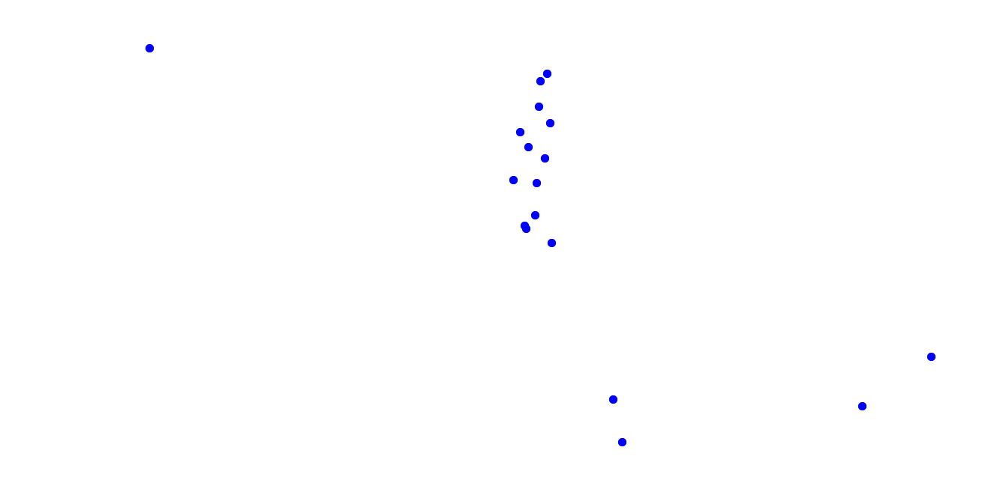

Parts of this website were translated by Google Translate, which can lead to alternative meanings in English.
×
Access might not be accessible for everyone to this website, due to limitation of internet access. Some languages and countries therefore have no voice.

.
.
.
.
.
.
.
.
.
.
.
.
.
.
.
.
.
.
.
.
Et møbel lavet til individuel sidde. Den indeholder et plateau til at sidde på og
et ryglæn, og hvis det har ben vil der
være fire ben.
An item of furniture made for individual sitting. It includes a plateau for
sitting on and a backrest, and if it has
legs there will be four legs.
For mig afhænger det virkelig af situationen og det øjeblik, du er i. Nogle gange kan det være et sted at hvile benene,
andre gange fordi du skal studere, du skal fokusere og sætte dig ned. For mig er det svært at komme med en vag
definition af det
er et sted, hvor du kan støtte dig selv uden at bruge dine ben, som at sidde ret op uden at bruge energi. Men for at
komme med en mere subjektiv definition, så afhænger det af situationen for mig.
For me it really depends on the situation and the moment you’re in. Sometimes it can be a place to rest your legs, at
other times because you need to study, you need to focus and to sit down. For me it is hard to come up with some vague
definition that it
is some place where you can support yourself without using your legs, like sitting up right without using energy. But to
come up with a more subjective definition, it depends on the situation for me.
Eine komfortable Sitzinsel.
A comfortable butt island.
Eine funktionale Struktur, die es meinem Körper ermöglicht, sich auszuruhen, zum Nachdenken anregen, sich unterhalten
oder eine Mahlzeit genießen.
A functional structure that allows my body to rest, animating thought ,conversation or indulgence of a meal.
Ein Hocker ist dazu gedacht, den Körper in eine Position zu bringen, in der die Beine angewinkelt sind, wahrscheinlich
kann ein Stein ein Hocker sein, aber ich denke an Holzstücke, die etwa 95 cm hoch und besonders leicht sind – ich Ich
sitze auf einem Kissen.
A stool is meant for bringing your body enabling it to rest in a position where the legs are in an angle, probably a
rock can be a stool, but I think at pieces of wood that are joined together about 95cm height and especially light – I’m
sitting on a pillow.
Voor mij is een stoel heel vaak ook een speels object, voor mij als ik me wil concentreren in de klas, helpt het me om
op mijn twee achterpoten te staan, want dan moet ik constant focussen op niet omvallen en die focus helpt me door de les
komen, maar ik gebruik soms stoelen om te spelen net een beetje zoals skateboarden maar dan op een stoel. Zoals er
omheen klimmen of ze opstapelen, dus het is zelden gewoon een zittend object.
For me a chair is very often also a playful object, for me if I want to concentrate in class, it helps me to be standing
on my two back legs, because then I constantly need to focus on not falling over and that focus helps me get through
class, but I sometimes use chairs to play just a bit like skateboarding but then on a chair. Like climbing around them
or piling them up, so it’s rarely just a sitting object.
Der Plastikstuhl wird bald Müll. Er ist nur in einer Zwischenphase. Am Ende wird er auch als Müll enden.
The plastic chair is soon to be trash. It is just in it’s premature state. In the end it will become waste.
Pour moi, une chaise est un objet sur lequel s'asseoir, et c'est assez amusant, car il envahit en quelque sorte notre
espace. Et les designers en sont toujours obsédés. Et c'est comme fondamentalement,
une sorte de concepteurs soumis à un lavage de cerveau, car ils pensent qu'ils doivent fabriquer des chaises et que des
chaises sont donc fabriquées. Et c'est ainsi que les chaises sont reproduites et propagées, mais nous n'avons pas besoin
d'autant de chaises
For me a chair is an object to sit on, and it is quite funny, because it is sort of invading our space. And designers
are still obsessed about it. And it is like basically,
sort of brainwashed designers, because they think they have to make chairs and therefore chairs are being made. And
that's how chairs are replicated and propagated, but we don't need that many chairs
a chair is an archetype of design - so much so that it’s the perfect object of the question ‘do we really need this?’ As
a counter to this utilitarian critique of a chair, it can also be a medium or canvas through which
to exercise an artistic, design, or symbolic vision. I suppose in this thought experiment, ultimately it’s a tool that
could be used to help us clarify what our intentions as designers are before we design.
If you are going to design a chair, you better have a good reason to
une chaise est un archétype du design - à tel point qu'elle est l'objet parfait de la question "en avons-nous vraiment
besoin?" d'exercer une vision artistique, design ou symbolique. Je suppose que dans cette expérience de pensée, c'est finalement
un outil qui pourrait être utilisé pour nous aider à clarifier nos intentions en tant que concepteurs avant de
concevoir.
Si vous envisagez de concevoir une chaise, vous feriez mieux d'avoir une bonne raison de
משהו שאתה מייחל לו כשהוא לא קיים, ולא יכול לחכות להיפטר ממנו ברגע שישבת עליו.
something that you wish for when it doesnt exist, and can't wait to get to rid of once you sat on it..
כיסא הוא רהיט שנועד להיות מקום בו תוכלו לשבת ולהניח את הרגליים, אני רואה בו גם סמל לאנושות..
רהיט כל כך בסיסי עבורנו אבל שונה אותנו מבעלי חיים, במקום לשבת על האדמה, ענפי עצים וכו' יצרנו רהיט שידוע בכל העולם רק כדי
להניח את הרגליים.
A chair is a piece of furniture that is meant to be a place you can sit and rest your legs,I see it also a symbol of
humanity.. such a basic furniture for us but differs us from animals, instead of sitting on the ground, tree branches etc we have
created a piece of furniture that is known all over the world just to rest our legs.
Quelle est l'essence d'une chaise ? Qu'est-ce qui en fait une chaise et non un tabouret, ou un meuble de repos ? Il y a
un dossier, des jambes, parfois des accoudoirs, et il est destiné à épouser la forme d'un corps assis. En fait, la
chaise est l'objet le plus anthropomorphique que l'homme ait jamais créé et c'est peut-être pour cela qu'elle fascine
les designers, les théoriciens et les ergonomes.
Je voudrais parler de la puissance de cet objet en tant que système.
Dans les musées, les lieux d'exposition, que feriez-vous si vous ne vouliez pas fluidifier les flux de personnes ? Vous
enlevez toutes les chaises. De cette façon, il donne doucement un ordre : Ne vous asseyez pas. La chaise est fortement
et contemporaine liée à l'action de s'asseoir et de se reposer que la seule présence de celle-ci permet de se reposer.
Le problème n'est pas un meuble qui est fait pour s'adapter à chaque position de repos individuelle mais plutôt pour
permettre à chaque corps d'adopter la même position. La chaise est liée à une politique de maîtrise de soi, du « debout
droit », du corps rigide imposée par un mouvement hygiéniste du début du XXe siècle. Nous n'avons découvert que
récemment que ces types de systèmes qui étouffent la volonté individuelle sont en fait la cause de blessures, de
scolioses… Et qu'en est-il des autres façons culturelles de se reposer, dans d'autres pays qu'occidentaux ? On peut
penser à des positions à genoux ou à des positions de repos debout.
La chaise représente alors un siège très restreint qui exerce une sorte de pouvoir et contraint les corps à s'adapter à
une norme. À mon avis, la résistance du corps est importante pour créer un individu.
What is the essence of a chair ? What makes it a chair and not a stool, or a resting piece of furniture ? There is a
back, some legs, sometimes armrests, and it is meant to follow the shape of a sitting body . In fact, the chair is the
most anthropomorphic object that the human have ever created and it’s maybe why it fascinates designers, theoreticians
and ergonomists.
I would like to talk about the power of this object as a system.
In museums, exhibition space, what would you do if you don’t want to fluidify the flux of people ? You remove all the
chairs. In this way, it softly gives an order: Do not sit. The chair is strongly and contemporary related to the action
of sitting and resting that the only presence of it allows you to rest.
The problem of it is not a piece of furniture that is made to adapt to each individual resting position but rather to
allow each body to adopt the same position. The chair is linked to a policy of self-control, of "stand up straight", of
the rigid body imposed by a hygienist movement of the early 20th century. We found out only recently that those kinds of
systems that muffle the individual will is in fact the cause of injuries, scolioses… And what about other cultural ways
of resting, in other than western countries ? We can think of kneeling positions or standing resting positions.
The chair, then represents a very restricted seat that applies a kind of power and forces bodies to fit to a norm. In my
opinion, the resistance of the body is important to create an individual.
Ein Ort um zu sitzen wenn du essen, drinken, warten, dich ausruhen, arbeiten musst. Es kommuniziert, man kann es
bewundern, es unterhalten (Theater, Konzert, Presentation). Es kann ein Sportgerät sein (Seniorensport, Meditation,
Ballett, Jonglieren). Es kann als Spielzeug benutzt werden für die Reise nach Jerusalem oder Puppen. Es ist verwandt mit
einem Thron, einer Dusche, Toilette (kranken Leuten), Haarstyling (Frisör), Stillen, Rollstuhl
A place to sit when you want to eat, drink, wait, rest, work, communicate, adminre, entertain (theatre, concert,
presentation).
It can be a sport equipment (senior sport, meditation, ballet, juggling). It can be used for playing (trip to Jerusalem,
dolls). It related to a throne, shower, toilet (sick people), hairstyling (hairdresser), breastfeeding, wheelchair.
Der Stuhl:
Dem Arsch seine Stütze,
Der Seele den Halt.
Dem Herscher sein Symbol
ob in Holz oder Stein,
meistens nur Schein.
Auf im wird Recht gesprochen
Oft auch Glas zerbrochen.
Aber immer ein Ort der Besinnung.
Um sich mal zurückzulehnen , auszuruhen, anzukommen
Darauf kannst du setzen
…setzen nicht sitzen!
The chair:
the ass its support,
The soul's hold.
To the ruler his symbol
whether in wood or stone,
mostly just appearances.
Justice will be pronounced on im
Often glass broken too.
But always a place for reflection.
To sit back, rest, arrive
You can bet on that
...sit not sit!
침대에 뒹굴고 싶지는 않지만 어딘가에 앉고 싶은데 소파가 없을 때 앉을 수 있는 자리. 그래서 내 방은 완전히 잠기지 않는 휴식처다.
A seat when you sit when you don’t want to slough on the bed, but you still want to sit somewhere, and you don’t have a
couch. So in my room it is a resting spot, which doesn’t fully submerge me.
그래서 제가 의자에 대해 정의하는 것은- 1. 몸을 접게 만드는 도구 2. 기본적으로 먼지 수분을 위한 도구입니다.
특히나 엉덩이 부분에 바지에 먼지가 많을텐데 바지 먼지를 의자로 다 옮기고 계시네요 그래서 밖에서 입은 옷은 침대에 절대 안앉아요 ㅎㅎ
So what my definition about chair is - 1. A tool that makes your body folded 2. Basically it's a tool for dust
polination, which means anyway you will sit down somewhere in dailylife with all kind of different chair, and
there must be so much dust on your pants espicially ass part, you are carrying all the dust on pants to pants by using
chair - that's why I never sit on my bed with clothes that I wore outside haha
一把椅子对我来说意味着放松，我认为它意味着安定下来一段时间。
A chair means relaxation for me, I think it means settle down for a certain period.
Stolicu doživljavam kao muški predmet (iako je na mom materinjem jeziku stolica ženskog roda). Asocijacija proizlazi iz
ideje da je stolica čvrsta i nosi težinu na leđima, što je tradicionalno muška osobina. Također me podsjeća na Atlasa iz
grčke mitologije.
I see chair as an masculine object (even tho in my native language chair is feminine gender). The association comes from
the idea that chair is sturdy and carries the weight on its back, which is traditionally a masculine trait. It also
reminds me of Atlas from greek mythology.'
Židle je věšák na šaty, někdy malý stolek. Lidé mají běžně na svém místě čtyři nebo i více židlí pro případ hostování.
Ale ty náhradní židle se nebudou používat každý den, pak se snažím, aby byly funkční pro každodenní použití
A chair is a clothes hanger, sometimes is a small table. People normally have four or even more chairs in their place,
in case for hosting. But those spare chairs are not going to be used every day, then I try to make them functional for
daily uses
Chaise vide. Il attend désespérément que quelqu'un soit assis pour le terminer. Cela pourrait rester pour toujours et la
solitude restera. Si et seulement si quelqu'un s'assoit, tout reprend sens. L'équilibre et l'harmonie embrasseront alors
le monde.
Empty chair. It is desperately waiting for someone sitting to make it completed. It could stay forever and loneliness
will remain. If and only if someone sits, everything makes sense again. Balance and harmony will then embrace the world.